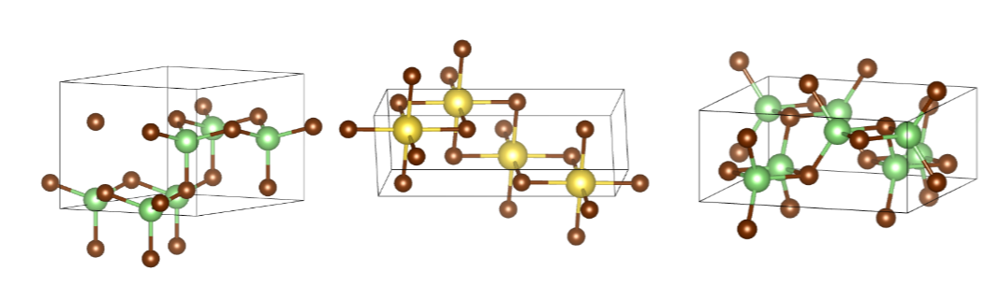

(Source: wikipedia.com)
{kind=link}
AI4Science Projects
Goal-driven
crystal
structure generation
Designing crystals is difficult as it requires deep
knowledge of materials science and exploration of a massive
combinatorial space. This project develops AI-driven methods for rapid
exploration of the crystal space towards targeted properties while
satisfying domain-specific constraints. Our approach combines
generative models with physics-informed neural networks to navigate the
vast space of possible crystal structures, considering atomic
composition, symmetry groups, and lattice parameters. The framework
incorporates materials science principles like electronegativity rules,
size effects, and thermodynamic stability to ensure generated
structures are both novel and synthesizable. This enables efficient
discovery of new crystals for applications ranging from semiconductors
to energy storage materials.

The examples of DFT-verified stable structures (Ehull = 0 eV/atom).
Designing
MOF for CO2 capturing
This project develops Generative AI to
accelerate the discovery of Metal-Organic Frameworks (MOFs) optimized
for CO2 capture. By combining deep generative models with
high-throughput screening, we develop an AI framework that learns the
complex relationships between MOF structure, chemical composition, and
CO2 adsorption capabilities. The system generates novel MOF candidates
by exploring the vast chemical space of metal nodes and organic linkers
while ensuring synthetic feasibility and stability. Our approach
incorporates domain knowledge about pore size distributions, surface
area constraints, and binding site energetics to prioritize structures
with high CO2 selectivity and working capacity under industrial
conditions.
(a) Example MOF structure (b)(c) Example metal clusters discovered.
Predicting chemical reactions is central to chemistry, impacting fields from drug synthesis to materials processing. In this project we reframe the reaction prediction problem as graph morphism, where a collection of reactants and catalysts form a supra-graph with temporarily disjoint sub-graphs. Reactions are viewed as a sequential decision problem, where each bond change is an action in the reaction pathway. Using reinforcement learning and graph neural networks, our model learns to predict likely reaction mechanisms by sequentially modifying molecular bonds, considering aspects such as electronic effects, steric hindrance, and thermodynamic feasibility. This approach enables prediction of complex reaction pathways, yields, and side products while providing mechanistic insights into chemical transformations.
Reaction represented as a set of
graph transformations from reactants (leftmost) to
products (rightmost).
Prediction of chemical-chemical interaction
Chemicals are rarely used in isolation but are typically surrounded by other chemicals in solutions, mixtures, and reactions. This project builds flexible machine learning models that predict interactions between any subset of chemicals in complex environments. By leveraging graph neural networks, attention mechanisms and neural computers, our approach captures both pairwise and higher-order interactions between molecular species. The framework can accounts for any contexts like concentration effects, pH conditions, and environmental factors that influence chemical behavior. This enables accurate prediction of properties like solubility, reactivity, and stability in multi-component systems, crucial for applications in drug development, materials synthesis, and chemical process optimization.
Flexible multiple molecules interaction modelling, aiming at answering multiple queries about the molecular system. The underlying model is Relational Dynamic Memory Networks.
| The scientific
enterprise has generated massive
empirical data from simulations and experimental studies. Much of the
knowledge is documented in the scientific literature, in the form of
textual description, mathematical equations, diagrams and tables. All
of these knowledge sources can be intergated into an associative memory
to be retrieved later in the form of Foundation Models (FMs). Thi
research program aims at leveraging recent advances in Large Language
Models (LLMs) to build scientific FMs, which will later be used by AI
Scientist agents in scientific workflows. Left: DALL·E 3 illustration of Foundation Models, compressing all scientific knowledge into its parameters. |
Physics-informed
GNNs for materials
This project develops physics-informed graph
neural networks (PiGNNs) to model materials, incorporating fundamental
physical laws such as symmetries and conservation directly into the
neural architecture. Unlike traditional GNNs, physical priors are
encoded through custom loss functions and specialized message-passing
operations. This approach aims to improve prediction accuracy for
properties like formation energy, bandgap, and elastic moduli while
ensuring physically consistent results, even with limited training data.
Embedding material graphs using the electron-ion potential.
Modelling
crystals plasticity
This project develops deep neural networks to
model stress-strain relationships in polycrystalline materials, where
multiple grain types coexist with distinct crystallographic
orientations. Our approach captures the complex interplay between
individual grain deformation mechanisms, grain boundary interactions,
and overall mechanical response. By incorporating microstructural
features like grain size distributions, misorientation angles, and
texture evolution, the model predicts heterogeneous plastic deformation
across different grain populations. The framework accounts for
grain-specific slip systems, local strain incompatibilities at
boundaries, and texture-dependent hardening behaviors to enable
accurate prediction of polycrystalline materials' mechanical properties
under various loading conditions.
Crystal microstructures.
Drug-protein
binding
prediction
This project aims at inventing new
data-efficient AI models to precisely predict the location and strength
of binding between drug molecules and target proteins, a critical
challenge in drug discovery. By developing advanced neural
architectures that capture both 2D/3D drug conformations and protein
structures, we model the complex physicochemical interactions at
binding sites. Our approach integrates multiple learning strategies:
representation learning for 2D/3D molecular
structures, attention mechanisms for binding site identification,
transfer learning from related protein families, and interpretability
methods to explain predictions. The framework incorporates biophysical
constraints and leverages limited experimental data to achieve accurate
binding affinity predictions while providing mechanistic insights into
drug-protein interactions.
Attention values at predicted binding sites of MST1 target.
Deep hybrid generative-discriminative model for inverse design
This project aims at developing general data-driven techniques for predicting the design parameters for any target in a single step. This poses two technical challenges: the first caused due to one-to-many mapping when learning the inverse problem and the second caused due to an user specifying the target specifications only partially. To overcome the challenges, we formulate this problem as conditional density estimation under high-dimensional setting with incomplete input and multimodal output.
|
CVAE-MDN,
where x:
input design, v:
specified target component, h:
unspecified part, and z:
latent variable. Left: Search speed comparison of the proposed CVAE-MDN with other search techniques. |
Multi-target molecular property prediction
Molecules have multiple properties of interest, and often all of them must be satisfactory for practical use in applications like drug discovery and materials design. This project develops new scalable and explainable techniques based on Graph Neural Networks to predict hundreds of properties simultaneously, leveraging the strong correlations between them. By encoding molecular structures as graphs and utilizing advanced attention mechanisms, our models capture complex structure-property relationships across diverse chemical spaces. The framework achieves state-of-the-art accuracy while providing interpretable insights into property predictions. Notably, the models are capable of zero-shot learning, enabling prediction of new properties using only their textual descriptions, thus reducing the need for extensive experimental data.
Substructures of a molecule corresponding to 8 prediction targets (PubChem SID: 491286)